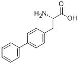

Los 20 aminoácidos que forman parte de las proteínas naturales están compuestos por un grupo amino
y uno carboxilo unidos por el carbono  , del que parten diferentes cadenas laterales (R, ver
figura 1.4). La cadena lateral R diferencia a los 20 aminoácidos y les confiere propiedades
químicas específicas (polares, no polares y cargadas).
, del que parten diferentes cadenas laterales (R, ver
figura 1.4). La cadena lateral R diferencia a los 20 aminoácidos y les confiere propiedades
químicas específicas (polares, no polares y cargadas).
Figura 1.4:
Estructura química de los L-aminoácidos.
|
|
Figura 1.6:
L-4,4'-byfenilalanina, un aminoácido no natural empleado en biotecnología.
Figura tomada de http://www.chemicalbook.com.
|

|
Los aminoácidos se encadenan por medio de enlaces
peptídicos para formar cadenas proteínas, también llamadas cadenas polipeptídicas, como se muestra en la
figura 1.7. Si excluimos las cadenas laterales R de los aminoácidos de la cadena obtenemos
el esqueleto peptídico ( backbone ).
Figura 1.7:
Estructura del enlace peptídico y la cadena polipeptídica. Este enlace es rígido, plano y no permite el giro.
Figura tomada de http://www.chem.ucla.edu.
|
|
PDF
Bruno Contreras-Moreira
http://www.eead.csic.es/compbio